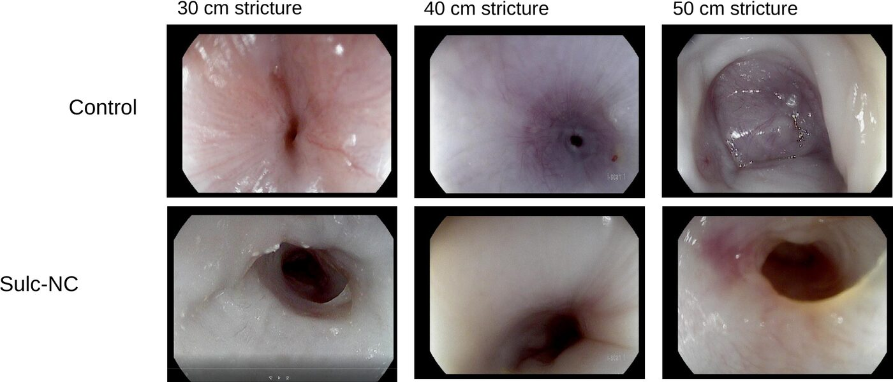

Approach
The approach is illustrated here by one program, traced from the clinical problem to the formation of a company over approximately ten years.
Approximately three million people in the United States have inflammatory bowel disease. Crohn's disease is chronic and incurable, and presents with abdominal pain, diarrhea, fatigue, weight loss, malnutrition and progressive bowel damage.
Up to half of patients with Crohn's disease develop a stricture, a fibrotic narrowing of the bowel that is a major cause of morbidity. No drug therapy is approved for strictures. Surgery and endoscopic balloon dilation are the first-line treatments, and approximately 60% of patients experience recurrence requiring further surgery or dilation.
Anastomotic strictures are local lesions. Systemic exposure to an antifibrotic is undesirable and, at the doses required, often poorly tolerated, so treatment has to be delivered into the stricture itself. This constraint determined the design of the program, which required three components developed in parallel:
An effective antifibrotic, identified by high-throughput screening; sulconazole was among the hits.
A sustained-release formulation suitable for local injection and retention in the stricture.
A large-animal model of bowel stricture, because rodent models cannot be used to evaluate endoscopic injection into a fibrotic bowel wall of human dimensions.
The screen required compound libraries, a high-throughput screening platform, assay expertise and modest funding. The swine model of luminal stricture required a large-animal facility, fluoroscopy, anesthesia support and substantially greater funding.
Identifying the need and a candidate solution was the smaller part of the work. Most of the ten years was spent assembling expertise, equipment and funding that no single laboratory held, and the Center is intended to shorten that process for subsequent programs.
A nanocrystal sustained-release formulation delivered by endoscopic injection into the stricture. The work was supported by private foundations and the State of Maryland ($1.8M), published in Gastroenterology, protected by intellectual property, and is being carried forward by a start-up company.

The same sequence, from clinical need through publication and funding to product, applies to each of the Center's programs.
We favor models with intact physiology, including blood supply and luminal contents, and endpoints that are clinically meaningful. Findings that have not been reproduced outside the model in which they were generated are treated with caution.
Invention disclosure precedes any external disclosure of results.
Authorship and ownership are agreed at the outset of each project. Projects remain with their investigators, and the Center is acknowledged alongside the individuals who carried out the work.